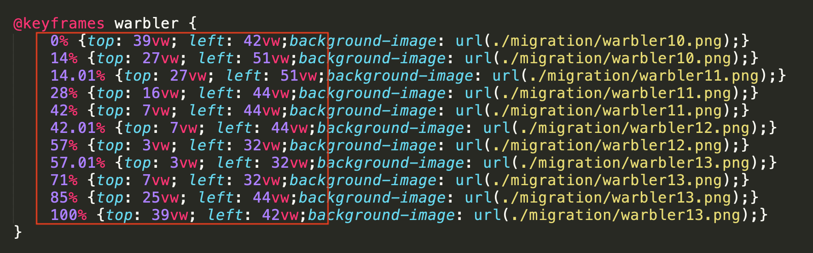
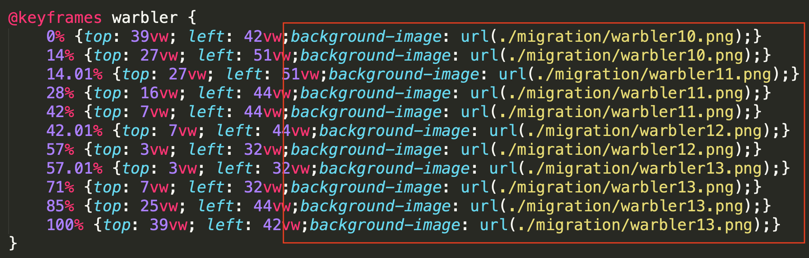
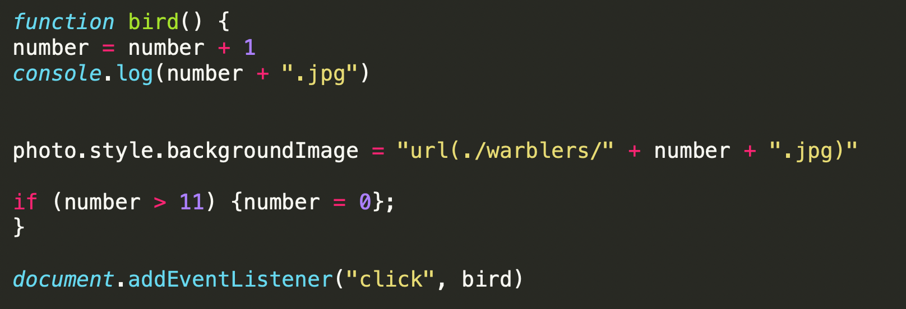

- They are small songbirds about the size of a sparrow
- They are very colorful in spring, but drab in the fall.
- They are constantly flitting around in trees to get insects, which makes it difficult to photograph them.
- They are migratory birds, and the ones I've seen travel along the Atlantic Flyway.